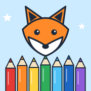

Doodle Fox Support
FAQ for grown-ups & feedback / 家长常见问题与反馈
English
Need help?
Email us at maple.indawn@gmail.com or open an issue on GitHub. Please include your device model and iOS or iPadOS version.
FAQ
What is free? The Animals pack (8 pictures) and the basic tools: crayon, marker, brush, fill and eraser. There are no ads and no time limits.
How do I unlock more pictures? Tap a locked pack, then “Ask a grown-up”, and answer the sum. You can buy a single pack, Magic Tools (stamps, glitter and the rainbow brush) or the Full Version, which includes everything. Each is a one-time purchase; there are no subscriptions.
Why is there a sum to answer? It’s a parental check that keeps young children from buying things, sharing pictures or leaving the app by accident.
It says “Waiting for approval”. The device is signed in with a child’s Apple Account that has Ask to Buy turned on. Apple has sent the request to the family organizer’s device. Once it’s approved, the pack unlocks by itself. If it’s declined, nothing is charged.
How do I restore purchases on a new device? Sign in with the same Apple Account, tap “Grown-ups” on the home screen, answer the sum, then tap “Restore purchases”.
How do I save or share a picture? When a picture is finished, tap “Grown-ups: save or share” and answer the sum. To save to Photos, allow Doodle Fox to add photos when iOS asks.
How do I delete pictures? Open My Art, tap “Edit” and answer the sum, then remove the pictures you don’t want.
How do I turn off the sounds? Tap “Grown-ups”, answer the sum, and switch off Sound effects.
Does it need the internet? No. Coloring works offline. A connection is only needed to buy or restore purchases.
简体中文
需要帮助？
请发邮件至 maple.indawn@gmail.com，或在 GitHub Issues 留言。请附上你的设备型号和 iOS 或 iPadOS 版本。
常见问题
哪些是免费的？ 动物图包（8 幅图）和基础工具：蜡笔、马克笔、画笔、填色和橡皮擦。没有广告，也没有时间限制。
怎么解锁更多图画？ 点一个上锁的图包，再点“请大人帮忙”，答对算术题。可以单独购买一个图包、魔法工具（印章、闪粉和彩虹画笔），或包含全部内容的完整版。都是一次性购买，没有订阅。
为什么要做算术题？ 这是家长验证，防止小朋友不小心购买、分享画作或离开本应用。
显示“等待批准”？ 说明设备登录的是开启了“购买前询问”的儿童 Apple 账户。Apple 已把请求发送到家庭组织者的设备上，批准后图包会自动解锁；如果被拒绝，不会扣款。
换了新设备怎么恢复购买？ 登录同一个 Apple 账户，在首页点“家长”，答对算术题，再点“恢复购买”。
怎么保存或分享画作？ 涂完一幅画后，点“家长：保存或分享”并答对算术题。保存到“照片”时，请在 iOS 询问时允许 Doodle Fox 添加照片。
怎么删除画作？ 打开“我的作品”，点“编辑”并答对算术题，然后删除不需要的画。
怎么关掉声音？ 点“家长”，答对算术题，关闭“音效”。
需要联网吗？ 不需要。涂色可以离线使用，只有购买或恢复购买时需要联网。
繁體中文
需要協助？
請寄信至 maple.indawn@gmail.com，或在 GitHub Issues 留言。請附上你的裝置型號和 iOS 或 iPadOS 版本。
常見問題
哪些是免費的？ 動物圖包（8 幅圖）和基礎工具：蠟筆、麥克筆、畫筆、填色和橡皮擦。沒有廣告，也沒有時間限制。
怎麼解鎖更多圖畫？ 點一個上鎖的圖包，再點「請大人幫忙」，答對算術題。可以單獨購買一個圖包、魔法工具（印章、亮粉和彩虹畫筆），或包含全部內容的完整版。都是一次性購買，沒有訂閱。
為什麼要做算術題？ 這是家長驗證，防止小朋友不小心購買、分享畫作或離開本應用。
顯示「等待核准」？ 表示裝置登入的是開啟了「購買前詢問」的兒童 Apple 帳號。Apple 已把請求傳送到家庭組織者的裝置上，核准後圖包會自動解鎖；如果被拒絕，不會扣款。
換了新裝置怎麼恢復購買？ 登入同一個 Apple 帳號，在首頁點「家長」，答對算術題，再點「恢復購買」。
怎麼儲存或分享畫作？ 塗完一幅畫後，點「家長：儲存或分享」並答對算術題。儲存到「照片」時，請在 iOS 詢問時允許 Doodle Fox 加入照片。
怎麼刪除畫作？ 打開「我的作品」，點「編輯」並答對算術題，然後刪除不需要的畫。
怎麼關掉聲音？ 點「家長」，答對算術題，關閉「音效」。
需要連網嗎？ 不需要。著色可以離線使用，只有購買或恢復購買時需要連網。
日本語
お困りですか？
maple.indawn@gmail.com へメールいただくか、GitHub Issues からお寄せください。端末の機種と iOS／iPadOS のバージョンを書き添えてください。
よくある質問
無料で使えるのは？ どうぶつパック（8枚）と基本の道具（クレヨン、マーカー、筆、ぬりつぶし、消しゴム）です。広告も時間制限もありません。
絵を増やすには？ ロックされたパックをタップし、「おとなの人に聞いてね」を押して計算問題に答えてください。パック単体、まほうのどうぐ（スタンプ、キラキラ、にじいろの筆）、すべてが入ったフルバージョンを購入できます。いずれも買い切りで、サブスクリプションはありません。
なぜ計算問題があるの？ 小さなお子さまが誤って購入したり、絵を共有したり、アプリの外へ移動したりしないための保護者確認です。
「承認待ち」と表示される 端末が「承認と購入のリクエスト」がオンになったお子さまの Apple アカウントでサインインしています。Apple がファミリー管理者の端末にリクエストを送っています。承認されるとパックは自動で解除され、拒否された場合は課金されません。
新しい端末で購入を復元するには？ 同じ Apple アカウントでサインインし、ホーム画面の「保護者」をタップして計算問題に答え、「購入を復元」をタップしてください。
絵を保存・共有するには？ 絵が完成したら「保護者：保存・共有」をタップして計算問題に答えてください。「写真」に保存するときは、iOS の確認で写真の追加を許可してください。
絵を削除するには？ 「マイアート」を開き、「編集」をタップして計算問題に答え、不要な絵を削除してください。
音を消すには？ 「保護者」をタップして計算問題に答え、「効果音」をオフにしてください。
インターネットは必要？ いいえ。ぬりえはオフラインで使えます。通信が必要なのは購入と購入の復元のときだけです。
© 2026 Doodle Fox · Privacy 隐私政策